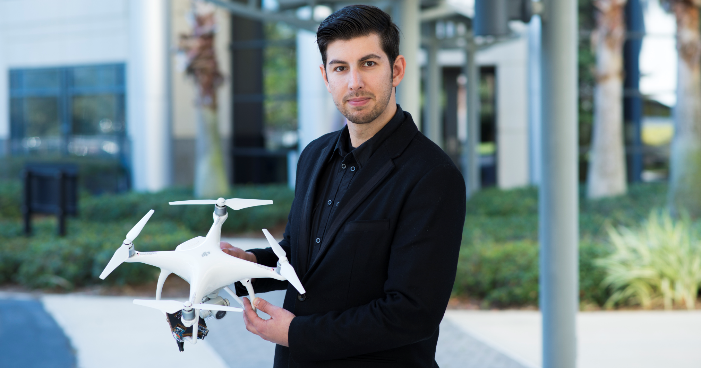

    <div class="container" id="main">
        <div class="row">

        {% include socialicons.html %}

            <div class="col-xs-12 col-sm-12 col-md-10 mx-auto">
                <br>
                <div align="center">
                    <font size="1">(Working on remote capturing information for sustainable design. I love validating my simulations with real world measurements.)</font>
                </div><br>
                <br>
            </div>

<div class="col-xs-12 col-sm-12 col-md-10 mx-auto">
<p class="custom_about"> Joe is an Assistant Professor at the <a href="http://www.ist.ucf.edu/">Institute for Simulation and Training</a> (IST) at the <a href="http://www.ucf.edu/">University of Central Florida </a> in Orlando, Florida. As part of <a href="http://www.ist.ucf.edu/">IST</a>, Joe researches with students  high dimensional light transport problems, such as complex illumination, material appearance, physically-based simulation, and spectral rendering, which facilitate a unique approach to provide both more accurate simulations and efficient algorithms for simulating sustainable architecture and smart buildings. I research advanced numeric simulations that derive a building’s daylighting behavior, thermal performance, and material properties. I develop novel approaches for simulating, manipulating, and physically realizing sustainable designs in all phases of a building’s lifecycle. This research directly impacts smart-building design, smart-cities, early-stage design, and retrofitting buildings.</p>

<p class="custom_about">
Joe was a Postdoctoral Scolar (and Research Associate) at <a href="http://www.cornell.edu/">Cornell University</a> in the <a href="http://www.graphics.cornell.edu/">Program of Computer Graphics</a>. I had the pleasure to be mentored by <a href="http://www.graphics.cornell.edu/people/director.html">Donald Greenberg</a>. Where I learned energy simulations were high dimensional light transport problems with more wavelengths than computer graphics.
</p>

<p class="custom_about">
Joe recieved his Ph.D. (and M.S.) at the <a href="http://www.cis.upenn.edu/index.php">Department of Computer and Information Science</a> at the <a href="http://www.upenn.edu/">University of Pennsylvania</a>. Joe was advised by <a href="http://www.cis.upenn.edu/~badler/">Norman Badler</a> and focused on Computer Graphics. My dissertation studied the <i>Simulation of 3D Model, Shape, and Appearance Aging by Physical, Chemical,
Biological, Environmental, and weathering Effects</i>. This work simulated the change and aging of a material's apperance and underlying geometry. Joe also built the <a href="https://fling.seas.upenn.edu/~mocap/cgi-bin/i.php">Multi Modal Motion Capture Facility and Library</a> While at Penn, Joe ran the <a href="http://cg.cis.upenn.edu/">SIG Center for Computer Graphics</a> serving as the Associate Director for three years. I also was a full lecturer in the <a href="http://www.cis.upenn.edu/index.php">Department of Computer and Information Science</a>. Joe had the pleasure of teaching and advising the amazing students in Penn's <a href="http://cg.cis.upenn.edu/dmd_program.html">Digital Media Design</a> Undergraduate Program and <a href="http://cg.cis.upenn.edu/cggt_program.html">Computer Graphics and Game Technology</a> Master Program. Joe also proudly supervised many talented students who currently work for: Pixar, Google, Dreamworks, NVIDIA, Microsoft, Facebook, Blue Sky, Disney Animation, Autodesk and many other top companies.</p>
</p>

<p class="custom_about">
Joe recieved his undergraduate degree (B.S.) in Computer Science (with minors in Mathematics and Political Science) from <a href="https://www.catholic.edu/index.html">The Catholic University of America</a> (CUA). While at Catholic, Joe interned for the <a href="https://www.nrl.navy.mil/">Naval Research Labratory</a> (2002-2003), NAVSEA - <a href="https://web.archive.org/web/20160625152131/http://www.navsea.navy.mil/nswc/Centers/Philadelphia.aspx">Naval Surface Warfare Center</a> (2001-2002), and was on the Web Development team at CUA.
</p>

<p class="custom_about">
I am orginally from Philadelphia.
</p>

<BR>

<hr>
<BR>

<table class="table table-striped table-inverse">
  <thead>
  <tr>
  <th colspan="2" class="text-center">Head Shot Images for talks and promotions.</td>
  </tr>
    <tr>
      <th class="text-center"><a href="../imgs/me/headshot1.png"></a></th>
      <th class="text-center"><a href="../imgs/me/headshot2.png"></a></th>
    </tr>
  </thead>
  <tbody>
    <tr > 
      <td class="custom_about text-center" style=" background-color: #333;"><a href="../imgs/me/headshot1.png">Headshot 1</a></td>
      <td class="custom_about text-center" style=" background-color: #333;"><a href="../imgs/me/headshot2.png">Headshot 2</a></td>
    </tr>
      <tr>
  <td colspan="2" class="text-center"><font size="1">Click on any image for full size version, right-click and download or copy.</font></td>
  </tr>
  </tbody>
</table>

</div>


        </div>
    </div>